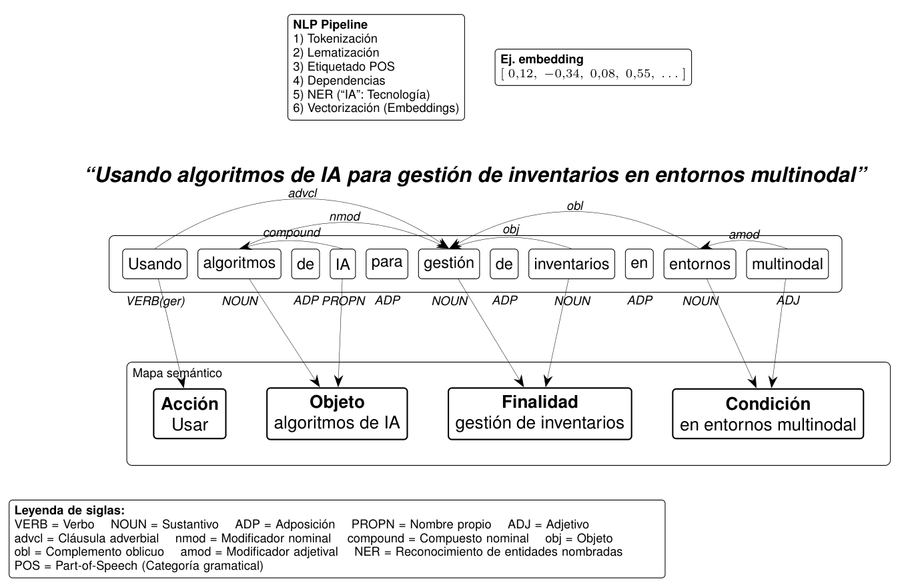

A l leer este artículo usted podrá comprender, encontrar y comparar las diferencias semánticas entre tres campos clave: Comercio Exterior, Supply Chain Management y Logística. A través del análisis de competencias profesionales extraídas de publicaciones académicas, se revelan patrones de acción, objetos de trabajo, propósitos y contextos específicos de cada área. El estudio utiliza técnicas modernas de inteligencia artificial para medir la similitud de significados, incluso cuando el lenguaje varía.
Pregunta: ¿Actualmente cómo se diferencia Supply Chain, Comercio Exterior y Logística en la literatura académica?
La evolución de una competencia no solo depende de su formulación interna, sino también del campo disciplinar que la enmarca. Así, analizar cómo varía semánticamente Estudio del significado de la palabra y su expresión. las competencias entre áreas permite detectar su orientación formativa dominante, sesgo temático o vacío emergente. Este estudio se sitúa en esa intersección, combinando una técnica de representación semántica con análisis estructurado de rutas Un concepto estructurado en secuencia: acción-objeto--finalidad--contexto.. El objetivo es revelar un patrón conceptual que no es evidente desde la simple lectura textual, pero que influye directamente en el diseño y convergencia de un perfil profesional.

En el análisis de resúmenes académicos (abstracts), una competencia laboral potencial puede descomponerse en cuatro elementos fundamentales que permiten identificar su estructura semántica, sin que aún constituya una competencia de formación formalizada. En este caso, la acción está representada por el verbo “usar”, que indica lo que el profesional realiza; el objeto define sobre qué recae la acción, en este ejemplo “algoritmos de IA”; la finalidad aporta el sentido estratégico de la actuación, “gestión de inventarios”; y la condición o contexto señala bajo qué circunstancias se ejecuta, aquí “en entornos multinodal”.
El gráfico siguiente presenta la distibución de journals consultados.
El factor de impacto (Impact Factor, IF) de un journal es una medida que indica la relevancia y visibilidad académica de una revista científica. Se calcula observando cuántas veces, en promedio, han sido citados los artículos publicados en esa revista durante los últimos dos años. En términos simples: a mayor factor de impacto, más influyentes y citados son los artículos de esa revista. Por ejemplo, si una revista tiene un factor de impacto de 4.0, significa que, en promedio, cada artículo publicado en ella fue citado cuatro veces en los dos años siguientes. Además del IF, existen otros índices relevantes: el SCImago Journal Rank (SJR), que pondera las citas según el prestigio de las revistas que las emiten; y el Journal Citaton Reports (JCR) de Clarivate, que clasifica las publicaciones en cuartiles (Q1 a Q4) según su posición relativa dentro de su categoría temática, siendo Q1 el más alto. Estas métricas, combinadas, ofrecen una visión más completa del alcance, la calidad y el impacto editorial de una revista dentro de su disciplina.
| Revista | SCImago (SJR) | Clarivate (JCR) Cuartil |
|---|---|---|
| European Journal of International Management | 0.362 | Q1 |
| The International Journal of Logistics Management | 1.757 | N/D |
| Journal of international economics | 4.321 | Q1 |
| Cleaner Logistics and Supply Chain | 1.528 | Q1 |
| Journal of Business Logistics | 2.768 | Q1 |
| Journal of Purchasing and Supply Management | 2.084 | Q1 |
| Transportation Research Part E-Logistics and Transportation Review | 2.884 | Q1 |
| Transportation Science | 2.475 | Q1 |
| Open Economies Review | 0.479 | Q2 |
| Review of International Economic | 0.589 | Q2 |
| World Trade Review | N/D | N/D |
| Journal of world business | 4.297 | Q1 |
| International economics | 0.963 | Q1 |
| Logistics, Supply Chain, Sustainability and Global Challenges | N/D | N/D |
| Journal of Supply Chain Management | 4.562 | Q1 |
| Transportation Journal | N/D | N/D |
| Review of World Economic | 0.574 | Q1 |
| The International Trade Journal | 0.268 | N/D |
| Logistics Research | 0.304 | Q3 |
| World Custom Journal | -- | Q4 |
| Latin American Journal of Trade Policy | N/D | N/D |
Se compara la orientación semántica general de las competencias inferidas Extraer algo no dicho a partir del texto. en tres campos disciplinarios —Comercio Exterior, Supply Chain Management y Logística[1]— a partir de los componentes estructurales de sus rutas: acción, objeto, finalidad y contexto. Para ello, se utiliza un enfoque basado en embeddings semánticos Representación numérica de palabras o frases que captura su significado según el contexto. , que transforma texto en vectores numéricos Secuencias ordenadas de números que representan magnitudes y direcciones en espacios matemáticos o computacionales. de alta dimensionalidad situación en que los datos tienen muchísimas variables o características, lo que complica el análisis y puede esconder patrones útiles. capaces de capturar el significado contextual.
Y todo esto nos ayuda a comprender este tipo de afirmaciones de método:
“Vectorizar textos y calcular similitud entre vectores medios...”
A diferencia de un análisis término a término, aquí se calcula un vector promedio por grupo y por dimensión, lo que permite identificar tendencias conceptuales generales, reduciendo la sensibilidad a variaciones léxicas específicas o frases atípicas Capacidad de notar cambios sutiles en palabras concretas. Esto permite evaluar la proximidad semántica global Grado de similitud en significado entre conceptos dentro de un conjunto amplio de textos o corpus. entre disciplinas, brindando un marco más tolerante y robusto para analizar convergencias o divergencias en el diseño de competencias.
El diagrama de Sankey que verá a continuación representa visualmente las relaciones de similitud semántica entre los tres grupos analizados, divididas por dimensión de competencia. Cada flujo conecta dos grupos en torno a una dimensión (acción, objeto, finalidad o contexto), y su grosor indica el nivel de semejanza: a mayor grosor, mayor similitud. Al pasar el mouse sobre cualquier flujo, podrá ver el valor exacto de similitud coseno Medida que indica cuán parecidos son dos textos comparando el ángulo entre sus representaciones numéricas (vectores). Si el valor está cerca de 1, significa que los textos tienen un significado muy parecido; si está cerca de 0, son muy distintos. No importa cuán largos sean, sino qué tan alineados están sus sentidos. Es como comparar la dirección de dos flechas: si apuntan igual, son similares. y los grupos comparados. Esto le permitirá explorar intuitivamente qué campos se acercan más en ciertos aspectos y dónde se distancian. Es una herramienta interactiva para descubrir patrones conceptuales de forma clara y visual.
Un umbral de similitud semántica es un valor numérico que define a partir de qué nivel dos textos o expresiones se consideran “lo suficientemente parecidos” en significado. Se calcula comparando vectores de representación semántica (por ejemplo, embeddings) y midiendo su proximidad mediante métricas como coseno o distancia euclidiana. Si la similitud medida supera el umbral fijado, se interpreta que existe correspondencia semántica relevante; si no, se considera que son distintos. El valor del umbral depende del contexto: en análisis lingüístico estricto suele ser alto (≥ 0.9), y en búsqueda aproximada puede ser más bajo (≈ 0.7).
El umbral de similitud ≥ 0.7 indica un nivel alto de coincidencia semántica entre dos elementos. Significa que, aunque las palabras puedan diferir, sus significados son lo suficientemente cercanos como para considerarlos equivalentes en contexto. Valores por debajo de 0.7 reflejan diferencias importantes en intención, contenido o enfoque. Este umbral permite distinguir entre similitud real y mera coincidencia superficial.
La siguiente tabla muestra el nivel promedio de similitud semántica dentro de cada grupo en relación con las cuatro dimensiones analizadas: acción, objeto, finalidad y contexto (condición). Los valores oscilan entre 0 y 1, donde un número mayor indica mayor coherencia o convergencia conceptual en las expresiones utilizadas por ese grupo. Por ejemplo, Comercio Exterior presenta alta consistencia en la dimensión "acción" (0.82), mientras que Logística muestra mayor dispersión en "objeto" (0.39). Esta tabla permite identificar qué dimensiones están más consolidadas semánticamente dentro de cada disciplina.
| Dimensión | Concepto | Comercio Exterior | Logística | Supply Chain Management |
|---|---|---|---|---|
| Acción | Comercio Exterior | 1.00 | 0.96 | 0.94 |
| Logística | 0.96 | 1.00 | 0.99 | |
| Supply Chain Management | 0.94 | 0.99 | 1.00 | |
| Objeto | Comercio Exterior | 1.00 | 0.76 | 0.72 |
| Logística | 0.76 | 1.00 | 0.94 | |
| Supply Chain Management | 0.72 | 0.94 | 1.00 | |
| Finalidad | Comercio Exterior | 1.00 | 0.86 | 0.83 |
| Logística | 0.86 | 1.00 | 0.96 | |
| Supply Chain Management | 0.83 | 0.96 | 1.00 | |
| Condición | Comercio Exterior | 1.00 | 0.84 | 0.79 |
| Logística | 0.84 | 1.00 | 0.93 | |
| Supply Chain Management | 0.79 | 0.93 | 1.00 |
Diferencia entre Comercio Exterior (ComeEx) y Logística. Desde la tabla de similitud semántica, se obtiene lo siguiente:
1. Mayor diferencia en el "Objeto" de Estudio. ComeEx vs. Logística: La similitud semántica en la dimensión "objeto" es la más baja (0.76), e indica que los temas de investigación en ComeEx difieren significativamente con Logística. Por ex: ComeEx se enfoca en "acuerdos comerciales" o "balanzas de pagos". Logística prioriza "gestión de transporte" o "optimización de rutas".
2. Objetivos ("Finalidad") y Contextos ("Condición") más Alineados entre Logística y Supply Chain. Logística vs. Supply Chain Management (SCM): Presentan alta similitud en "finalidad" (0.96) y "condición" (0.93), que sugiere el compartir metas (por ex: eficiencia operativa) y marcos de aplicación (cadenas globales). ComeEx vs. Logística/SCM: La similitud es menor (0.86 en finalidad, 0.84 en condición), reflejando que los propósitos y contextos son menos intercambiables.
3. Acciones más genéricas, objetos más especializados. En "acción", todas las áreas muestran alta similitud (≥0.94) con verbos comunes (por ex: "optimizar", "analizar"). En "objeto", la brecha es mayor (ComeEx vs. Logística: 0.76), y la especialización temática es el principal diferenciador, incluso cuando las metodologías (acciones) son similares.
ComeEx se distingue en su enfoque temático ("objeto"). Logística y SCM comparten más elementos en sus objetivos y condiciones. Las "acciones" son transversales, sin embargo, la especificidad del objeto de estudio define la identidad de cada disciplina. Esto puede guiar una estrategia de investigación interdisciplinaria. Tener en cuenta que un proyecto que combine Logística y SCM tienen más cercanías conceptuales que con ComeEx. En la dimensión "condición" hay algunos patrones que complementan las conclusiones anteriores. Hallazgos clave en la dimensión "condición": (Contextos, marcos o circunstancias en que se realizan las acciones).
Logística y SCM comparten contextos operativos. Similitud alta (0.93): Ambos campos operan en entornos similares, como: Cadenas de suministro globales, Tecnologías de seguimiento (IoT, blockchain), modelos de optimización bajo incertidumbre. Por ex: "Usando algoritmos de IA para gestión de inventarios en entornos multinodal" (esto es válido para ambos). ComeEx tiene algunas condiciones que son más de tipo institucional/legal.
Brecha con Logística (0.84) y SCM (0.79): Sus contextos suelen involucrar: Acuerdos comerciales (TLC, OMC), barreras arancelarias, políticas cambiarias. Por ex: "Evaluando impactos del proteccionismo en flujos bilaterales bajo el CPTPP (Acuerdo Integral y Progresivo de Asociación Transpacífico)”.
Logística actúa como puente: Mayor similitud con SCM (0.93) que ComeEx (0.84): La Logística absorbe condiciones de SCM (por ex: sostenibilidad en transporte), pero también aplica en algunas de ComeEx (por ex: regulaciones aduaneras). Esto explica por qué no es un valor tan bajo como en "objeto" (0.76).
Proyectos que combinen Logística + ComeEx debe articular claramente cómo sus contextos difieren (por ex: normativas vs. eficiencia operativa). Para clasificación de estudios: La dimensión "condición" ayuda a discriminar entre áreas cuando los "objetos" son similares (por ex: "transporte" puede aparecer en las tres, pero con marcos distintos).
Desde la tabla de similitud semántica y los ejemplos concretos del dataset, se destaca lo siguiente:
ComeEx: Objetos de estudio: Políticas comerciales, acuerdos internacionales, flujos de capital, competitividad empresarial en mercados globales. Ejemplo: "Evaluar el impacto del T-MEC en las exportaciones agrícolas mexicanas bajo nuevas normas de origen" (Journal of International Economics). "Mitigar riesgos cambiarios en operaciones de comercio exterior mediante coberturas financieras" (Review of World Economics). Logística: Objetos de estudio: Optimización de rutas, gestión de inventarios, tecnología en cadena de suministro, última milla: "Reducir costos de almacenamiento en centros de distribución mediante algoritmos de picking inteligente" (Journal of Business Logistics). Brecha cuantificada: La similitud semántica en "objeto" es solo del 0.76, confirmando que son disciplinas con focos temáticos muy diferentes.
Condiciones prácticas: Uso de tecnologías (IoT, blockchain), restricciones de transporte, eficiencia operativa: "Implementar drones para entregas médicas en zonas rurales con infraestructura vial limitada" (The International Journal of Logistics Management). ComeEx: Condiciones normativas: Regulaciones aduaneras, aranceles, políticas monetarias: "Analizar el efecto de las sanciones comerciales de la UE sobre las cadenas de suministro rusas" (World Trade Review). La similitud en "condición" es del 0.84, y refleja una superposición en contextos globales, pero con enfoques distintos (operativo vs. regulatorio).
Acciones compartidas (similitud del 0.96 en "acción"): Verbos como "optimizar", "analizar" o "implementar" son transversales, pero su aplicación varía: ComeEx: "Optimizar aranceles para atraer inversión extranjera directa" (Latin American Journal of Trade Policy). Logística: "Optimizar rutas de reparto mediante IA para reducir emisiones de CO₂" (Cleaner Logistics and Supply Chain).
Finalidad: ComeEx: Integración económica, competitividad internacional (ej. "Fomentar exportaciones no tradicionales"). Logística: Eficiencia y sostenibilidad operativa (ej. "Reducir tiempos de carga en puertos con automatización").
Investigación interdisciplinaria: Proyectos que combinen ambas áreas deben articular con claridad cómo se complementan (Por ex: logística en zonas francas bajo tratados comerciales).
Clasificación de estudios: La dimensión "objeto" es clave para discriminar entre disciplinas cuando los métodos (acciones) son similares.
Enseñanza: Cursos de comercio exterior deben enfatizar normativas, mientras los de logística priorizan herramientas tecnológicas.
Ejemplo: Un estudio sobre "Logística inversa de paneles solares en la UE bajo el Green Deal" requiere: ComeEx: Conocer regulaciones de importación de componentes. Logística: Diseñar rutas de reciclaje eficientes. (Evaluar las habilidades y competencias de ESCO).
Empresas líderes que representan las cadenas de valor propuestas para Logística, Comercio Exterior (ComEx) y Supply Chain Management (SCM), alineadas con sus tendencias clave. Las cadenas de valor en el cuadro siguiente presenta el modelo VAC de actividades clave y la competencias inferida.
DHL Supply Chain: VAC: Usa robots autónomos en almacenes (Locus Robotics) y vehículos eléctricos para última milla. Relación con datos: Similar a "Optimizar rutas con algoritmos de aprendizaje reforzado" (Transportation Science).
Maersk: VAC: Integra blockchain para rastreo de contenedores en tiempo real (TradeLens). Relación con datos: Coincide con "Monitorear carga con IoT" (Logistics Research).
Amazon Logistics: VAC: Drones para entregas rápidas (Prime Air) y algoritmos de predicción de demanda. Relación con datos: Refleja "Predecir demanda estacional con IA" (Journal of Business Logistics).
Cargill: VAC: Uso de derivados financieros para cubrir riesgos en commodities agrícolas. Relación con datos: Alinea con "Cobertura de fluctuaciones cambiarias" (Review of International Economics).
Alibaba Group: VAC: Plataforma digital para PYMES exportadoras (Alibaba.com) con herramientas de cumplimiento aduanero. Relación con datos: Similar a "Automatizar clasificación arancelaria con ML" (World Customs Journal).
Glencore: VAC: Arbitraje comercial de metales y energía, ajustándose a sanciones internacionales. Relación con datos: Ejemplifica "Gestionar disputas en la OMC" (Journal of International Economic Law).
Unilever: VAC: Red de proveedores sostenibles para aceite de palma cero deforestaciones. Relación con datos: Vinculado a "Seleccionar proveedores carbono-neutral" (Journal of Purchasing and Supply Management).
Patagonia: VAC: Cadena circular de reciclaje de prendas (Worn Wear). Relación con datos: Corresponde a "Desarrollar mercados secundarios para componentes remanufacturados" (Cleaner Logistics and Supply Chain).
Tesla: VAC: Control vertical de baterías (desde minería de litio hasta reciclaje). Relación con datos: Refleja "Modelar redes CLSC para baterías" (Cleaner Logistics and Supply Chain).
| Sector | Empresas | Diferencial en la VAC | Base en datos semánticos |
|---|---|---|---|
| Logística | DHL, Maersk, Amazon | Tecnología para eficiencia operativa | Alta frecuencia de "IA" y "IoT" (acción: 0.96) |
| ComEx | Cargill, Alibaba | Adaptación a normativas y riesgos globales | Dominio de "aranceles" y "riesgo" (objeto: 0.76) |
| SCM | Unilever, Patagonia | Redes colaborativas y sostenibilidad | Foco en "circularidad" (finalidad: 0.96) |
FedEx: Combina Logística (rutas optimizadas) y ComEx (soluciones aduaneras).
IKEA: Integra SCM (cadena sostenible de muebles) y Logística (gestión de almacenes robotizados).
Caso realista, pero de escala mediana, considerando las particularidades del mercado local:
Caso: Exportadora de Salmón de Puerto Montt (Región de Los Lagos). Contexto: Empresa chilena de acuicultura que exporta salmón a EE.UU., Asia y Europa, enfrentando desafíos logísticos, regulatorios y de sostenibilidad.
Fase 1. Previsión de demanda: Usar IA para predecir demanda de salmón ahumado en EE.UU. basado en tendencias de consumo (similar a Amazon Logistics).
Fase 2. Transporte refrigerado: Implementar sensores IoT en contenedores para monitorear temperatura en tiempo real (como Maersk).
Fase 3. Última milla: Alianzas con distribuidores locales en Miami para entregas rápidas con vehículos eléctricos (inspirado en DHL).
Dato clave: Chile es el segundo mayor exportador mundial de salmón, donde un 1% de pérdida por mala logística implica millones de dólares anuales.
Fase 1. Inteligencia de mercados: Analizar aranceles del CPTPP para exportar a Japón con ventajas competitivas (como Alibaba en Asia).
Fase 2. Certificaciones: Obtener certificación ASC (Aquaculture Stewardship Council) para cumplir con estándares europeos.
Fase 3. Financiamiento: Cubrir riesgos cambiarios con instrumentos de CORFO para proteger margen en euros (similar a Cargill).
Adaptación: Chile tiene 33 acuerdos comerciales con 65 países, pero las empresas medianas subutilizan estos beneficios por desconocimiento.
Fase 1. Abastecimiento responsable: Compra de alimento para peces a proveedores con certificación de pesca sostenible (como Unilever).
Fase 2. Reducción de residuos: Transformar desechos de piel de salmón en suplementos de colágeno (economía circular, como Patagonia).
Fase 3. Logística inversa: Reutilizar cajas de poliestireno expandido en colaboración con otros productores locales (inspirado en Tesla).
Innovación local: Empresas como Salmones Austral ya reciclan el 90% de sus residuos industriales.
| Fase | Acción Concreta | Inspiración Global | Impacto Local |
|---|---|---|---|
| Logística | Sensores IoT en transporte marítimo | Maersk (TradeLens) | Reduce mermas por variación de temperatura |
| ComEx | Certificación ASC para UE | Alibaba (cumplimiento) | Acceso a mercados premium (+15% precio) |
| SCM | Valorización de residuos en colágeno | Patagonia (Worn Wear) | Nuevo ingreso por subproductos (USD 2M/año) |
Barreras: Alta dependencia de rutas marítimas (por ex: congestión en puertos como San Antonio) y costos de transporte.
Oportunidad: Chile puede posicionarse como líder en acuicultura sostenible si integra blockchain para trazabilidad (como el proyecto Pescao en Perú).
Recomendación final: Una empresa mediana chilena puede escalar su operación adoptando:
1. Tecnología low-cost: Sensores IoT locales (por ex: startup chilena The Food Trust).
2. Alianzas públicas: Usar plataformas de ProChile para inteligencia de mercados.
3. Economía circular: Apoyo de Corfo para innovación en residuos.
La tabla contiene algunas "rutas" de ejemplo. En una base de datos pueden existir una par de centenares de ellas para reaizar un estudio de similitud semántica. Es una excelente alternativa para conocer la existencia de tendencias propias en Supply Chain Management, Comercio Exterior y Logística.
© 2025 OPT/DuocUC. All rights reserved.